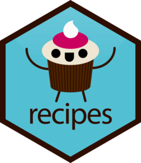

Download PDF
Get your data ready for modeling using ‘pipable’ sequences of feature engineering steps with recipes.
recipe(x, ...): Begins a new recipe specification.
prep(x, ...): Prepares the recipe with training data.
bake(object, ...): Applies estimates from prep().
update(object, ...): Updates and re-fits a model.
step_ argumentsrecipe |
A recipe object. New steps are appended to the recipe. |
... |
Arguments passed to the external R function accessed by the step function |
options |
Selector functions to choose variables for this step |
step_nzv(recipe, ..., freq_cut = 95/5, unique_cut = 10, options = list(freq_cut = 95/5): Removes variables that are highly sparse and unbalanced.
step_zv(recipe, ..., group = NULL): Removes variables that contain only a single value.
step_lincomb(recipe, ..., max_steps = 5): Removes numeric variables that have exact linear combinations between them.
step_corr(recipe, ..., threshold = 0.9, use = "pairwise.complete.obs", method = "pearson"): Removes variables that have large absolute correlations with other variables.
step_filter_missing(recipe, ..., threshold = 0.1): Removes variables that have too many missing values.
step_rm(recipe, ...): Removes selected variables.
step_mutate(recipe, ..., .pkgs = character()): General purpose transformer using dplyr.
step_relu(recipe, ..., shift = 0, reverse = FALSE, smooth = FALSE, prefix = "right_relu_"): Applies smoothed rectified linear transformation.
step_sqrt(recipe, ...): Applies square root transformation.
step_spline_natural(recipe, ..., deg_free = 10, options = NULL, keep_original_cols = FALSE): Creates a natural spline (a.k.a restricted cubic spline) features.
step_spline_b(recipe, ..., deg_free = 10, degree = 3, options = NULL, keep_original_cols = FALSE): Creates b-spline features.
step_spline_convex(recipe, ..., deg_free = 10, degree = 3, options = NULL, keep_original_cols = FALSE)
step_spline_monotone(recipe, ..., deg_free = 10, degree = 3, options = NULL, keep_original_cols = FALSE)
step_spline_nonnegative(recipe, ..., deg_free = 10, degree = 3, options = NULL, keep_original_cols = FALSE)
step_poly(recipe, ..., degree = 2L, options = list(), keep_original_cols = FALSE): Creates new columns that are basis expansions of variables using orthogonal polynomials.
step_poly_bernstein(recipe, ..., degree = 10, options = NULL, results = NULL, keep_original_cols = FALSE): Creates Bernstein polynomial features.
step_normalize(recipe, ..., na_rm = TRUE): Normalizes to have a standard deviation of 1 and mean of 0.
step_YeoJohnson(recipe, ...): Makes data look more like a normal distribution.
step_percentile(recipe, ..., options = list(probs = (0:100)/100), outside = "none"): Replaces the value of a variable with its percentile from the training set.
step_range(recipe, ..., min = 0, max = 1, clipping = TRUE): Normalizes numeric data to be within a pre-defined range of values.
step_spatialsign(recipe, ..., na_rm = TRUE): Converts numeric data into a projection on to a unit sphere.
step_discretize(recipe, ..., num_breaks = 4, min_unique = 10, options = list(prefix = "bin")): Converts numeric data into a factor with bins having approximately the same number of data points.
step_cut(recipe, ..., breaks, include_outside_range = FALSE): Cuts a numeric variable into a factor based on provided boundary values.
step_impute_bag(recipe, ..., impute_with = all_predictors(), trees = 25, options = list(keepX = FALSE)): Creates a bagged tree model for data. Good for categorical data.
step_impute_knn(recipe, ..., neighbors = 5, impute_with = all_predictors(), options = list(nthread = 1, eps = 1e-08)): Uses Gower’s distance which can be used for mixtures of nominal and numeric data.
step_impute_linear(recipe, ..., impute_with = all_predictors()): Creates linear regression models to impute missing data.
step_impute_lower(recipe, ..., threshold = NULL): Substitutes the truncated value by a random number between zero and the truncation point.
step_impute_mean(recipe, ..., trim = 0): Substitutes missing values of numeric variables by the training set mean of those variables.
step_impute_median(recipe, ...): Substitutes missing values of numeric variables by the training set median of those variables.
step_impute_mode(recipe, ...): Imputes nominal data using the most common value.
step_impute_roll(recipe, ..., statistic = median, window = 5L): Imputes numeric data using a rolling window statistic.
step_unknown(recipe, ..., new_level = "unknown"): Assigns a missing value in a factor level to “unknown”.
step_factor2string(recipe, ...): Converts one or more factor vectors to strings.
step_string2factor(recipe, ...): Converts one or more character vectors to factors (ordered or unordered).
step_num2factor(recipe, ..., transform = function(x) x): Converts one or more numeric vectors to factors (ordered or unordered). This can be useful when categories are encoded as integers.
step_integer(recipe, ..., strict = TRUE, zero_based = FALSE): Converts data into a set of ascending integers based on the ascending order from the training data.
step_indicate_na(recipe, ..., sparse = "auto", keep_original_cols = TRUE): Creates and append additional binary columns to the data set to indicate which observations are missing.
step_ordinalscore(recipe, ..., convert = as.numeric): Converts ordinal factor variables into numeric scores.
step_unorder(recipe, ...): Turns ordered factor variables into unordered factor variables.
step_relevel(recipe, ..., ref_level): Reorders factor columns so that the level specified by ref_level is first. This is useful for contr.treatment() contrasts which take the first level as the reference.
step_novel(recipe, ..., new_level = "new"): Assigns a previously unseen factor level to “new” .
step_other(recipe, ..., threshold = 0.05, other = "other" ): Pools infrequently occurring values into an “other” category.
step_dummy(recipe, ..., threshold = 0, other = "other", naming = dummy_names, prefix = NULL, keep_original_cols = TRUE): Standard dummy variable converter.
step_dummy_extract(recipe, ..., sep = NULL, pattern = NULL, threshold = 0, other = "other", keep_original_cols = TRUE): Converts multiple nominal data into one or more numeric integer terms for the levels of the original data.
step_dummy_multi_choice(recipe, ..., threshold = 0, other = "other", keep_original_cols = TRUE): Converts multiple nominal data into one or more numeric binary terms for the levels of the original data.
step_bin2factor(recipe, ..., levels = c("yes", "no"), ref_first = TRUE): Converts dummy variable into 2-level factor.step_regex(recipe, ..., options = list(), pattern = ".", options = list(), result = make.names(pattern), sparse = "auto", keep_original_cols = TRUE): Creates a dummy variable that detects the given regular expression.
step_count(recipe, ..., normalize = FALSE, pattern = ".", options = list(), result = make.names(pattern), sparse = "auto", keep_original_cols = TRUE): Create counts of patterns using regular expressions.
step_date(recipe, ..., features = c("dow", "month", "year"), abbr = TRUE, label = TRUE, ordinal = FALSE, locale = clock::clock_locale()$labels, keep_original_cols = TRUE): Converts date data into one or more factor or numeric variables (dow = day of week).
step_time(recipe, ..., features = c("hour", "minute", "second"), keep_original_cols = TRUE): Converts date-time data into one or more factor or numeric variables.
step_holiday(recipe, ..., holidays = c("LaborDay", "NewYearsDay", "ChristmasDay"), sparse = "auto", keep_original_cols = TRUE): Converts date data into binary indicators variables for common holidays.
step_pca(recipe, ..., num_comp = 5, threshold = NA, options = list(), keep_original_cols = TRUE): Converts numeric variables into one or more principal components.
step_ica(recipe, ..., num_comp = 5, options = list(method = "C"), keep_original_cols = TRUE): Converts numeric data into one or more independent components.
step_kpca_poly(recipe, ..., num_comp = 5, degree = 2, scale_factor = 1, offset = 1, keep_original_cols = TRUE): Converts numeric data into principal components using a polynomial kernel basis expansion.
step_kpca_rbf(recipe, ..., num_comp = 5, sigma = 0.2, keep_original_cols = TRUE): Converts numeric data into principal components using a radial basis function kernel basis expansion.
step_isomap(recipe, ..., num_terms = 5, neighbors = 50, options = list(.mute = c("message", "output")), keep_original_cols = TRUE): Uses multidimensional scaling to convert numeric data into new dimensions.
step_nnmf_sparse(recipe, ..., num_comp = 2, penalty = 0.001, options = list(), keep_original_cols = TRUE): Converts numeric data into non-negative components.
step_pls(recipe, ..., num_comp = 2, predictor_prop = 1, outcome = NULL, options = list(scale = TRUE), preserve = deprecated(), prefix = "PLS", keep_original_cols = TRUE): Converts numeric data into one or more new dimensions.
step_classdist(recipe, ..., class, mean_func = mean, cov_func = cov, pool = FALSE, log = TRUE, prefix = "classdist_", keep_original_cols = TRUE): Converts numeric data into Mahalanobis distance measurements to the data centroid.
step_classdist_shrunken(recipe, ..., class = NULL, threshold = 1/2, sd_offset = 1/2, log = TRUE, prefix = "classdist_", keep_original_cols = TRUE): Converts numeric data into Euclidean distance to the regularized class centroid.
step_depth(recipe, ..., class, metric = "halfspace", options = list(), data = NULL, prefix = "depth_", keep_original_cols = TRUE): Converts numeric data into a measurement of data depth by category
step_geodist(recipe, lat = NULL, lon = NULL, ref_lat = NULL, ref_lon = NULL, is_lat_lon = TRUE, log = FALSE, name = "geo_dist", keep_original_cols = TRUE): Calculates the distance between points on a map to a reference location.
step_ratio(recipe, ..., denom = denom_vars(), naming = function(numer, denom) {make.names(paste(numer, denom, sep = "_o_")) }, keep_original_cols = TRUE): Creates ratios from selected numeric variables (denom).
step_naomit(recipe, ...): Removes observations if they contain NA or NaN values.
step_sample(recipe, ..., size = NULL, replace = FALSE): Samples rows using dplyr::sample_n() or dplyr::sample_frac().
step_shuffle(recipe, ...): Randomly changes the order of rows for selected variables.
step_slice(recipe, ...): Filters rows using dplyr::slice().
step_interact(recipe, terms, sep = "_x_", keep_original_cols = TRUE) - Creates new columns that are interaction terms between two or more variables.
step_rename(recipe, ...) - Adds variables using dplyr::rename().
step_window(recipe, ..., size = 3, na_rm = TRUE, statistic = "mean", keep_original_cols = TRUE) - Creates new columns that are the results of functions that compute statistics across moving windows.
all_outcomes() / all_predictors() - Select variables from formula based on the most common two roles.
has_role(match = “predictor") - Select by passing the role name required.
has_type(match = "numeric")- Select by type of variable.
| Double | Integer | Text | Logical | Factor Unordered | Factor Ordered | |
|---|---|---|---|---|---|---|
all_string_predictors() |
✅ | |||||
all_logical_predictors() |
✅ | |||||
all_numeric_predictors() |
✅ | ✅ | ||||
all_integer_predictors() |
✅ | |||||
all_double_predictors() |
✅ | |||||
all_factor_predictors() |
✅ | ✅ | ||||
all_ordered_predictors() |
✅ | |||||
all_unordered_predictors() |
✅ | |||||
all_nominal_predictors() |
✅ | ✅ | ✅ |
all_date_predictors() / all_datetime_predictors()In case a variable is not a outcome or predictor but needs to be retained. Create new role, and set it to not ‘bake’.
add_role(recipe, ..., new_role = "predictor", new_type = NULL) - Adds an additional role to variables that already have a role in the recipe.
update_role(recipe, ..., new_role = "predictor", old_role = NULL) - Alters an existing role in the recipe or assigns an initial role to variables that do not yet have a declared role.
remove_role(recipe, ..., old_role) - Eliminates a single existing role in the recipe.
update_role_requirements(recipe, ..., bake = NULL) - Allows for fine tunes requirements of the various roles you might come across in recipes.
To learm more about roles see: https://recipes.tidymodels.org/reference/roles.html.